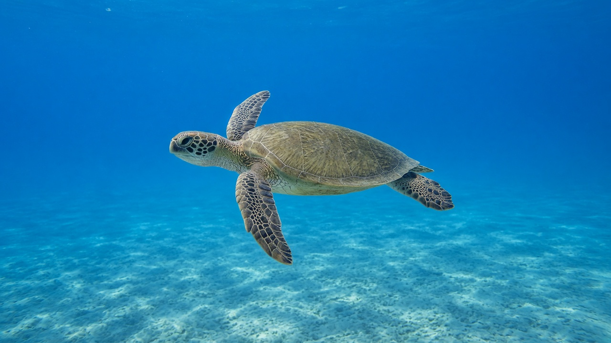
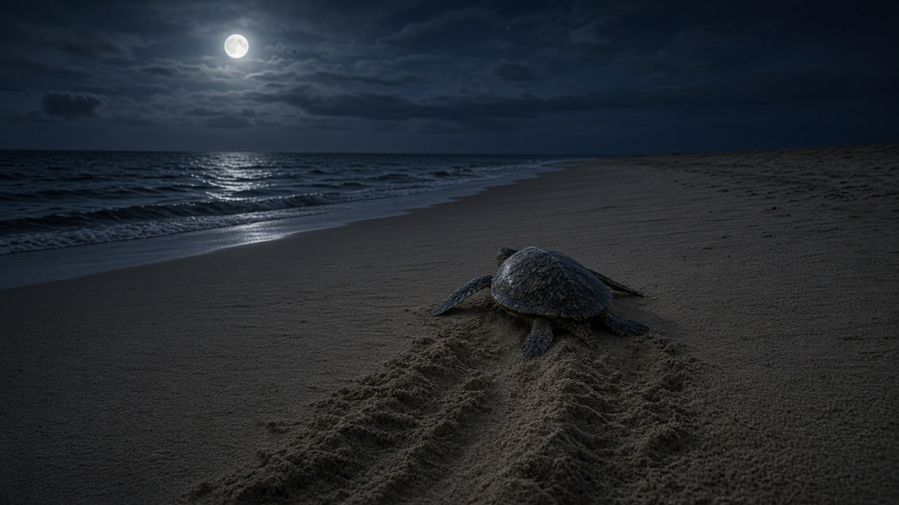
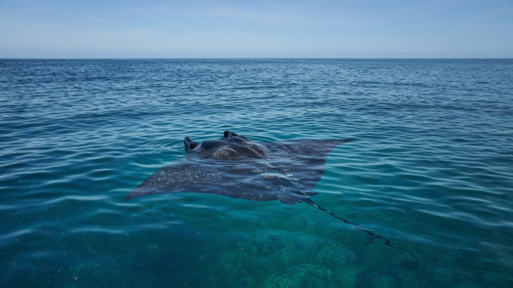

Sea Turtles and Migratory Marine Species
Published on August 20, 2026

Sea turtles and many fishes, sharks, rays, and seabirds live as transboundary travellers rather than as residents of a single bay. Hatchling turtles crawl from tropical beaches into oceanic gyres, spend years as pelagic juveniles, then return with magnetic and chemical cues to nest on the same stretch of sand. Olive ridley arribadas on the Odisha coast of the Bay of Bengal are among the world’s densest nesting events, linking Indian beaches to foraging grounds across the northern Indian Ocean. Leatherbacks, greens, hawksbills, and loggerheads each specialise on different diets—jellyfish, seagrass, sponges, or crabs—so their migrations stitch together distant habitats.
Migratory marine species share a common vulnerability: a threat at any stop can collapse the whole life cycle. Coastal lights disorient hatchlings; trawls and gillnets drown adults; plastic bags mimic jellyfish; and warming sand skews hatchling sex ratios because nest temperature determines sex. Tuna, whale sharks, and manta rays follow plankton and temperature fronts that ignore exclusive economic zones. Satellite tags now draw maps of corridors that overlap shipping lanes and fishing hotspots, turning migration from a mystery into a planning layer. The Convention on Migratory Species and regional turtle agreements exist because no beach-protection program alone can save an animal that feeds a thousand kilometres away.
Effective conservation therefore pairs nest protection with ocean-scale measures. Turtle-excluder devices in shrimp trawls, seasonal fishery closures off nesting beaches, dark-sky rules for coastal lighting, and bycatch monitoring on longlines all reduce mortality after hatchlings enter the water. For inland readers, the lesson is connectivity: rivers that dump plastic and nutrients into the Bay of Bengal alter the foraging waters of turtles that never crawl onto a Himalayan bank. Treating migratory species as shared living infrastructure—rather than as seasonal curiosities—keeps international law, fishing practice, and beach tourism pointed at the same life-history map.

समुद्री कछुवा र धेरै माछा, शार्क, रे र समुद्री चराले एउटा खाडीका बासिन्दा होइन सीमापार यात्रीका रूपमा बाँच्छन्। बच्चा कछुवा उष्ण समुद्र तटबाट महासागरीय चक्रधारामा पस्छन्, वर्षौं खुला पानीका युवा बिताउँछन्, त्यसपछि चुम्बकीय र रासायनिक संकेतसँगै उही बालुवा पट्टीमा गुँड गर्न फर्कन्छन्। बंगालको खाडीको ओडिशा तटमा जैतुन रید्ली अरिबाडा संसारका सबैभन्दा बाक्ला गुँड घटनामध्ये हुन्, भारतीय समुद्र तटलाई उत्तरी हिन्द महासागरभरिका चारण क्षेत्रसँग जोड्छन्। लेदरब्याक, हरियो, हक्सबिल र लगरहेड प्रत्येकले फरक आहारा—जेलीफिस, समुद्री घाँस, स्पन्ज वा केकडा—मा विशेषज्ञता राख्छन्, त्यसैले तिनका बसाइँसराइले टाढा वासस्थान सिलाउँछन्।
बसाइँ सर्ने समुद्री प्रजातिले साझा कमजोरी बाँड्छन्: कुनै पनि बिसौनीको खतराले पूरा जीवन चक्र ढलाउन सक्छ। तटीय बत्तीले बच्चालाई दिशाभ्रम पार्छ; ट्रल र गिलजालले वयस्क डुबाउँछन्; प्लास्टिक झोलाले जेलीफिस नक्कल गर्छन्; र तातो बालुवाले बच्चाको लिङ्ग अनुपात बिगार्छ किनभने गुँड तापक्रमले लिङ्ग निर्धारण गर्छ। टुना, ह्वेल शार्क र मान्टा रेले विशेष आर्थिक क्षेत्र नमान्ने प्लवक र तापक्रम मोर्चा पछ्याउँछन्। उपग्रह ट्यागले अब ढुवानी लेन र माछा मार्ने तातो बिन्दुसँग खप्टिने करिडोरका नक्सा कोर्छन्, बसाइँसराइलाई रहस्यबाट योजना तहमा बदल्छन्। बसाइँ सर्ने प्रजाति महासन्धि र क्षेत्रीय कछुवा सम्झौता छन् किनभने एक्लो समुद्र तट संरक्षण कार्यक्रमले हजार किलोमिटर टाढा खाने जनावर बचाउन सक्दैन।
प्रभावकारी संरक्षण त्यसैले गुँड सुरक्षा र महासागर-स्तरीय उपाय जोड्छ। झिँगा ट्रलमा कछुवा-निकास उपकरण, गुँड तटअघि मौसमी मत्स्य बन्द, तटीय बत्तीका लागि अँध्यारो आकाश नियम र लामो डोरीमा उपपकड निगरानीले बच्चा पानी पसेपछि मृत्यु घटाउँछन्। भित्री पाठकका लागि पाठ जडान हो: बंगालको खाडीमा प्लास्टिक र पोषक फाल्ने नदीले हिमालयी किनारामा कहिल्यै नघस्रने कछुवाका चारण पानी बिगार्छन्। बसाइँ सर्ने प्रजातिलाई मौसमी कौतूहल होइन साझा जीवित पूर्वाधार मानेर अन्तर्राष्ट्रिय कानुन, माछा मार्ने अभ्यास र समुद्र तट पर्यटनलाई उही जीवन-इतिहास नक्सातिर फर्काइ राखिन्छ।

समुद्री कछुए और कई मछलियाँ, शार्क, रे तथा समुद्री पक्षी एक खाड़ी के निवासी नहीं सीमापार यात्री के रूप में जीते हैं। नवजात कछुए उष्ण समुद्र तट से महासागरीय चक्रधाराओं में घुसते, वर्षों खुले जल के युवा बिताते, फिर चुंबकीय और रासायनिक संकेतों के साथ उसी बालू पट्टी पर घोंसला करने लौटते हैं। बंगाल की खाड़ी के ओडिशा तट पर जैतून रिडली अरिबाडा विश्व की सबसे सघन घोंसला घटनाओं में हैं, भारतीय समुद्र तट को उत्तरी हिन्द महासागर भर के चारण क्षेत्रों से जोड़ते हैं। लेदरबैक, हरे, हॉक्सबिल और लॉगरहेड प्रत्येक अलग आहार—जेलीफ़िश, समुद्री घास, स्पंज या केकड़ा—में विशेषज्ञता रखते हैं, इसलिए उनकी प्रवास दूर आवासों को सीलती हैं।
प्रवासी समुद्री प्रजातियाँ साझी कमज़ोरी बाँटती हैं: किसी भी पड़ाव का खतरा पूरा जीवन चक्र ढहा सकता है। तटीय बत्तियाँ नवजातों को दिशाभ्रम देती हैं; ट्रॉल और गिलजाल वयस्कों को डुबाते हैं; प्लास्टिक थैले जेलीफ़िश की नकल करते हैं; और गर्म बालू नवजात लिंग अनुपात बिगाड़ती है क्योंकि घोंसला तापमान लिंग तय करता है। टूना, व्हेल शार्क और मेंटा रे विशेष आर्थिक क्षेत्र न मानने वाले प्लवक और तापमान मोर्चे पीछे चलते हैं। उपग्रह टैग अब नौवहन लेन और मछली पकड़ने के गर्म बिंदुओं से अतिव्यापी गलियारों के नक्शे खींचते हैं, प्रवास को रहस्य से योजना परत में बदलते हैं। प्रवासी प्रजातियाँ संधि और क्षेत्रीय कछुआ समझौते हैं क्योंकि अकेला समुद्र तट संरक्षण कार्यक्रम हज़ार किलोमीटर दूर खाने वाले प्राणी को नहीं बचा सकता।
प्रभावी संरक्षण इसलिए घोंसला सुरक्षा और महासागर-स्तरीय उपाय जोड़ता है। झींगा ट्रॉल में कछुआ-निकास उपकरण, घोंसला तटों के आगे मौसमी मत्स्य बंद, तटीय बत्ती के लिए अँधेरा आकाश नियम और लंबी डोरी पर उपपकड़ निगरानी नवजात जल में उतरने के बाद मृत्यु घटाते हैं। भीतरी पाठकों के लिए पाठ संयोजन है: बंगाल की खाड़ी में प्लास्टिक और पोषक फेंकने वाली नदियाँ हिमालयी किनारे पर कभी न रेंगने वाले कछुओं के चारण जल बिगाड़ती हैं। प्रवासी प्रजातियों को मौसमी कौतूहल नहीं साझा जीवित अवसंरचना मानकर अंतरराष्ट्रीय क़ानून, मछली पकड़ने की प्रथा और समुद्र तट पर्यटन को उसी जीवन-इतिहास नक्शे की ओर रखा जाता है।